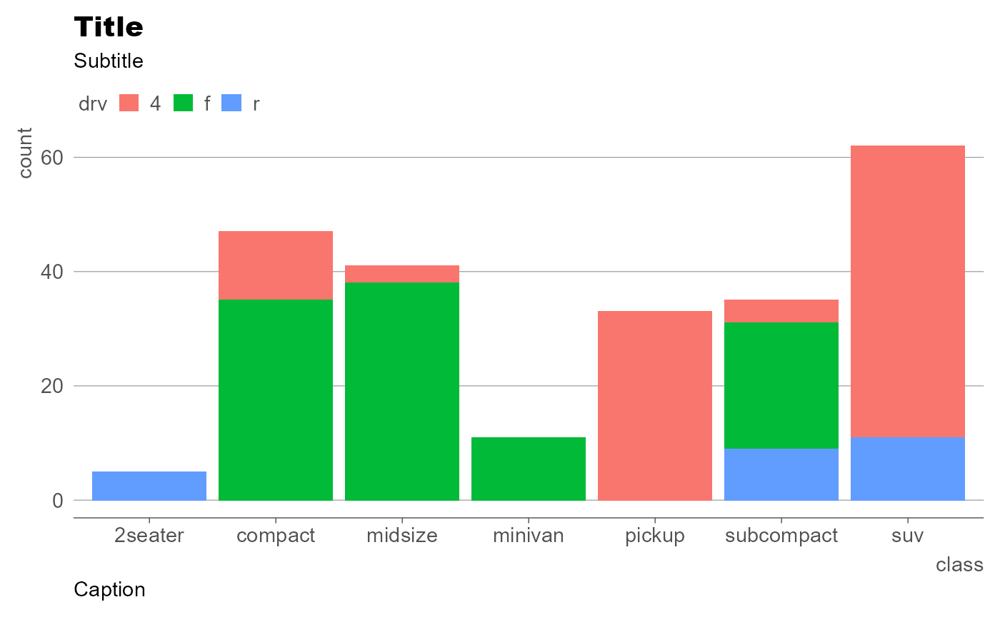
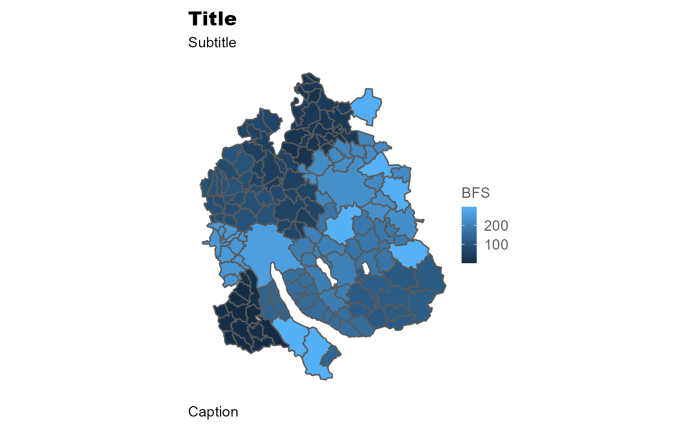
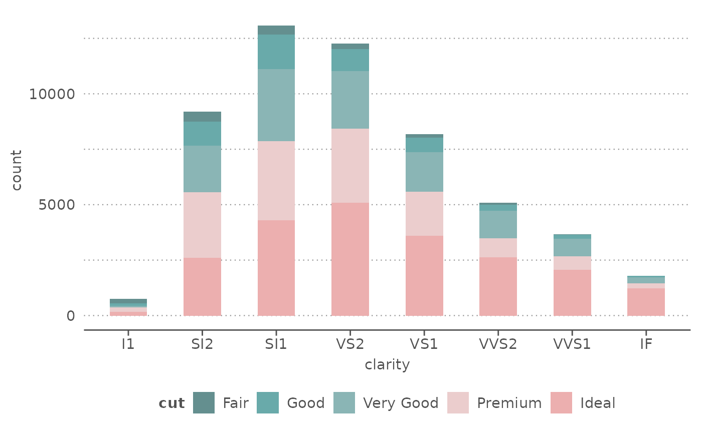
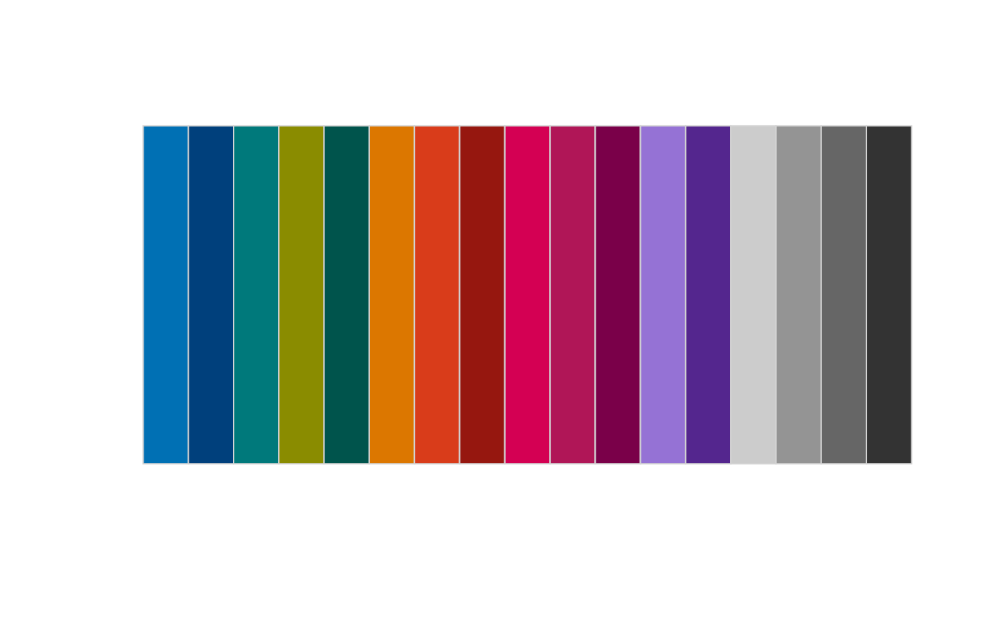
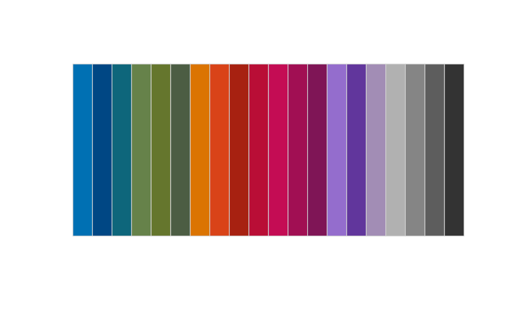
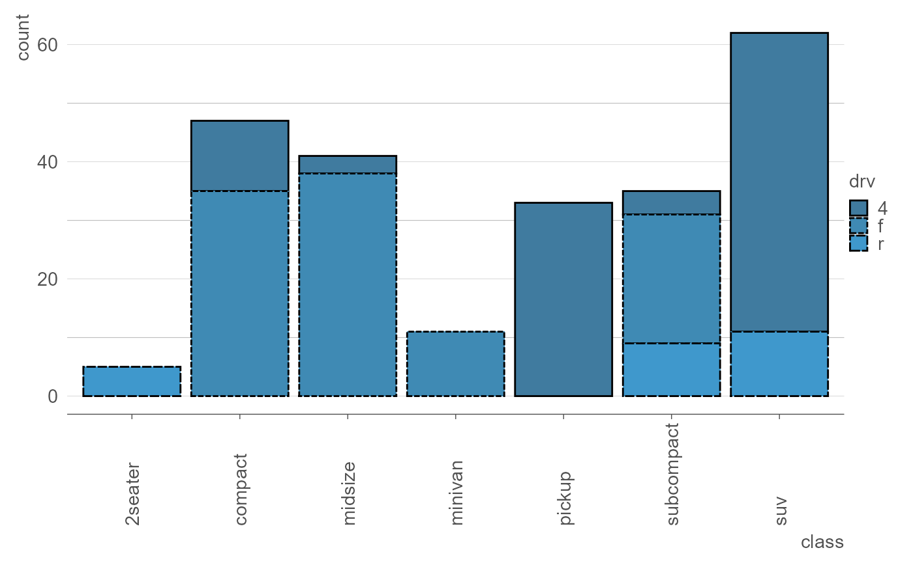
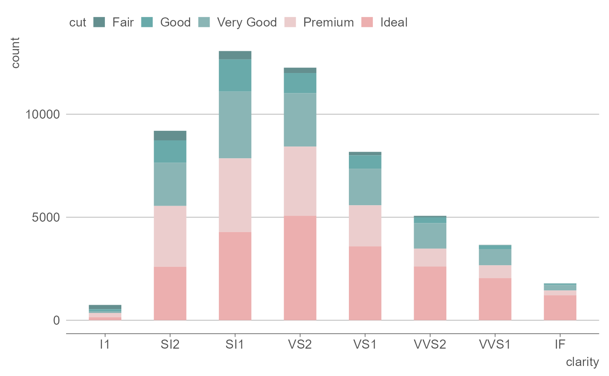

theme_stat() für ggplot2-Grafiken
Das statR-ggplot2-theme ist darauf ausgelegt, sich gut ins kantonale Corporate Design einzufügen. Es basiert auf dem ggplot2-theme ‘minimal’ und bestimmt diejenigen Grafikeigenschaften, die nichts mit den Daten an sich zu tun haben (z.B. die Schriftart).
Innerhalb des themes kann die Schriftgrösse, die Position der Achsenbeschriftungen sowie das Vorhandensein von Achsenlinien, Achsen-Ticks und kleineren Gitterlinien bestimmt werden.
ggplot(mpg, aes(class,fill = drv))+ geom_bar()+ # Default-Spezifikationen innerhalb theme_stat() theme_stat(base_size = 11, axis.label.pos = "top", axis.lines = "x", ticks = "x", minor.grid.lines = FALSE) + labs(title = "Title", subtitle = "Subtitle", caption = "Caption")

Farbpaletten
Das Farbpalettenobjekt zhpal enthält alle im Package vorhandenen Farbpaletten und ist mit dem geladenen statR-Package global verfügbar.
Mit der Funktion display() kann man sich die Farben einer Palette anschauen:
display(zhpal$zhdiagonal)
Mit der Funktion grDevices::colorRampPalette() kann eine beliebige Anzahl Farbtöne basierend auf einer statR-Farbpalette erstellt werden:
#Mische 20 Farbtöne auf Basis der zhdiagonal-Palette display(grDevices::colorRampPalette((zhpal$zhdiagonal),space="Lab")(20))

Anwendungsbeispiel mit kategorialen Daten:
#verwende die Paletten für kategoriale Daten mittels 'scale_fill_manual' ggplot(mpg, aes(class,fill = drv))+ geom_bar()+ theme_stat()+ scale_fill_manual(values=zhpal$zhblue)

Barrierefreie Grafiken
Bei der Erstellung von Grafiken ist es besonders wichtig darauf zu achten, dass die Grafiken auch für Personen mit (Farb-)Sehschwächen und Sehbehinderungen interpretierbar sind. Um solche barrierefreie Grafiken zu erstellen, bieten sich im Allgemeinen verschiedene Strategien an:
Daten, die der Grafik zugrunde liegen, zusätzlich als csv oder -html-Tabelle einbinden
Einen Alternativtext (alt-Text) hinterlegen, der beschreibt, was auf der Grafik abgebildet ist und wo die Daten zu finden sind
Farbpaletten wählen, die für Farbsehschwächen optimiert sind
Die Grafik soll nicht ausschliesslich aufgrund einer Farbpalette interpretierbar sein
Die Komplexität der Grafiken sollte auf ein Minimum beschränkt werden
Einige dieser Punkte können direkt bei der Erstellung der Grafiken in R berücksichtigt werden.
1. Farbsehschwächen
Damit Grafiken auch für Personen mit Farbsehschwächen möglichst gut interpretierbar sind, sollten Farben in Grafiken sowohl bezüglich der Farbanteile als auch der Farbsättigung variiert werden. Wenn möglich, sollten unterschiedliche Datenkategorien zudem nicht nur über die Farben sondern auch über unterschiedliche Darstellungsformen unterscheidbar sein (z.B. Schraffuren, Punkt- oder Linientypen; siehe 1.3). Auch die direkte Beschriftung von Kategorien bietet sich hier als Mittel an (siehe 1.4).
1.2 Auswahl Farbpaletten
In R können mit dem dichromat-Package diverse Ausprägungen von Farbsehschwäche simuliert werden. Dies erlaubt es Farbpaletten auszuwählen, die möglichst farbsehschwächenfreundlich sind.



Die Simulation kann auch anhand von Grafiken vorgenommen werden.
p <- ggplot(diamonds, aes(clarity, fill=cut)) + geom_bar(position = "stack", width= 0.5) p + theme_stat() + scale_fill_manual(values=dichromat(zhpal$zhdiagonal, type=c("tritan")))

1.3 Form- oder Linientypen
Wenn immer möglich sollten unterschiedliche Kategorien nicht nur mit unterschiedlichen Farben gekennzeichnet werden, sondern auch mit unterschiedlichen Schraffuren, Symbol- oder Linientypen (siehe: https://bbc.github.io/gel/components/infographics/#recommended-layout). Ja nach Grafiktyp eignen sich andere Ansätze:
Liniendiagramme: Linientyp
Säulen / Flächendiagramme: Linientyp oder Flächenstruktur
Scatter / Punkte-Diagramm: Symbole
Ab einer gewissen Anzahl an Kategorien, wird die Grafik unübersichtlich.
Beispiel : Liniengrafik
data <- read.csv("https://www.web.statistik.zh.ch/ogd/data/ojuga/KANTON-ZUERICH_jugendstrafrechtspflege_geschlechter_verurteilungen.csv") %>% pivot_longer(cols=2:3) gg_ojuga <- ggplot(data, aes(Jahr, value ,color=name,linetype=name)) + geom_line()+ theme_stat()
Beispiel : Säulendiagramm
ggplot(mpg, aes(class,fill = drv,linetype=drv))+ geom_bar(col ="black")+ theme_stat()+ scale_fill_manual(values=zhpal$zhblue)+ theme(legend.position="right", axis.text.x = element_text(angle=90,vjust = 0.5, hjust=0), panel.grid.major = element_line(colour = "grey", size = 0.1), panel.grid.minor = element_line(colour = "grey", size = 0.2))

1.4 Direkte Beschriftung
Bei gewissen Grafiktypen kann die Unterscheidbarkeit von Kategorien auch durch direkte Beschriftung verbessert werden. Das ´ggrepel´-package verfügt über die notwendigen Funktionen. Beispielsweise sorgt es dafür, dass die Beschriftungen nicht überlappen.
library(ggrepel) data <- read.csv("https://www.web.statistik.zh.ch/ogd/data/ojuga/KANTON-ZUERICH_jugendstrafrechtspflege_geschlechter_verurteilungen.csv") %>% pivot_longer(cols=2:3) ggplot(data, aes(Jahr, value ,color=name)) + geom_text_repel(data=data %>% filter(Jahr==max(Jahr)), aes(label=name), direction = "y") + geom_line()+ theme_stat()+ guides(color="none")

Grafiken fürs ZHWeb
- Maximale Bildgrösse 4000x4000
- Grafik-Titel / Untertitel, Legende, Quelle und Alt-Text können direkt im ZHWeb hinterlegt werden
ggplot(mpg, aes(class,fill = drv))+ geom_bar()+ theme_stat()+ scale_fill_manual(values=zhpal$zhblue)+ theme(legend.position="right", axis.text.x = element_text(angle=90,vjust = 0.5, hjust=0), panel.grid.major = element_line(colour = "grey", size = 0.1), panel.grid.minor = element_line(colour = "grey", size = 0.2))
# ggsave(file = "zhweb_plot.png", width=18, height=8, unit="cm")